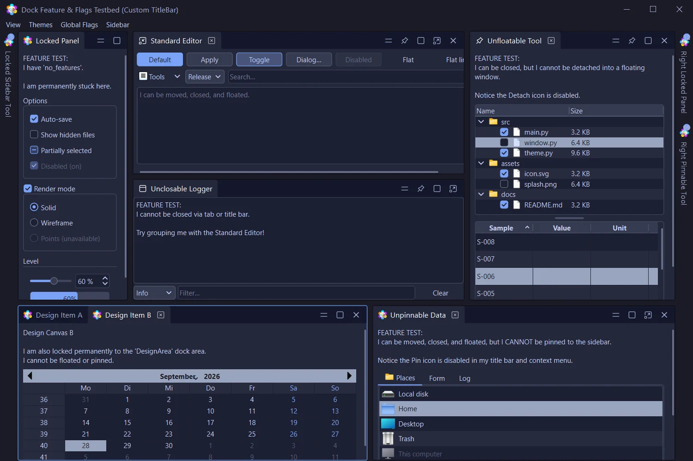
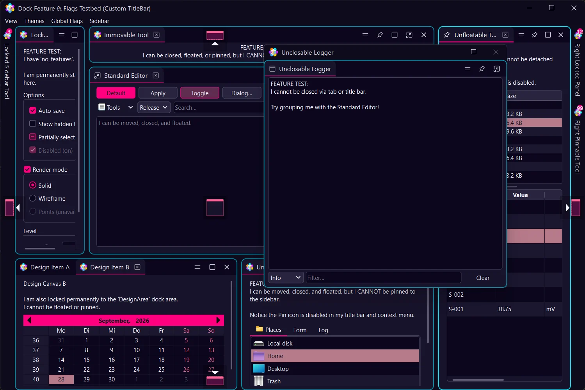
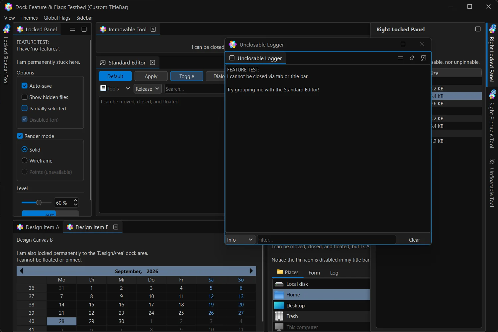
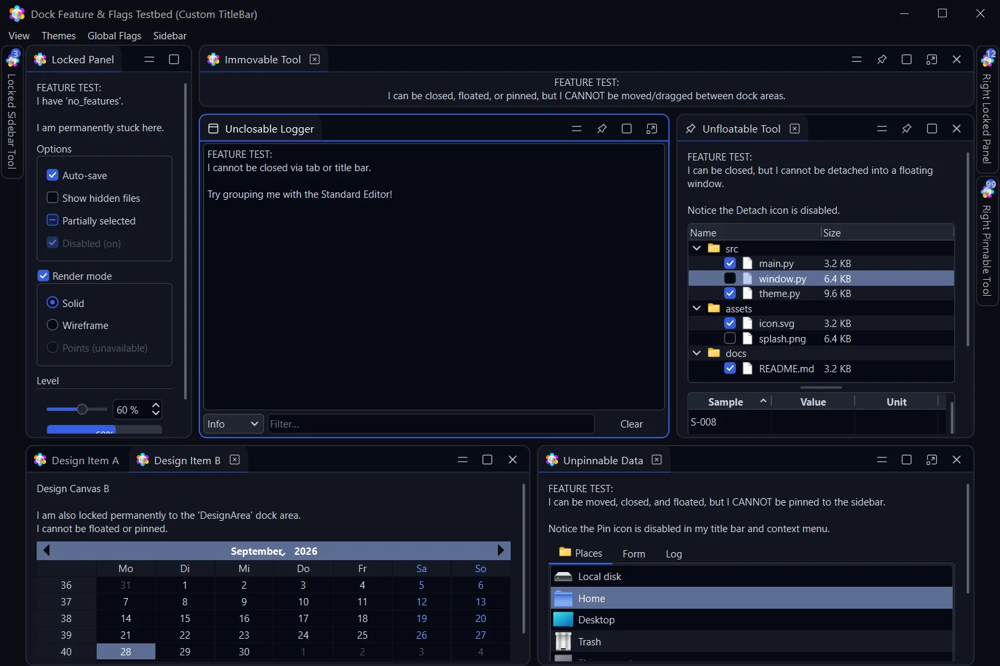
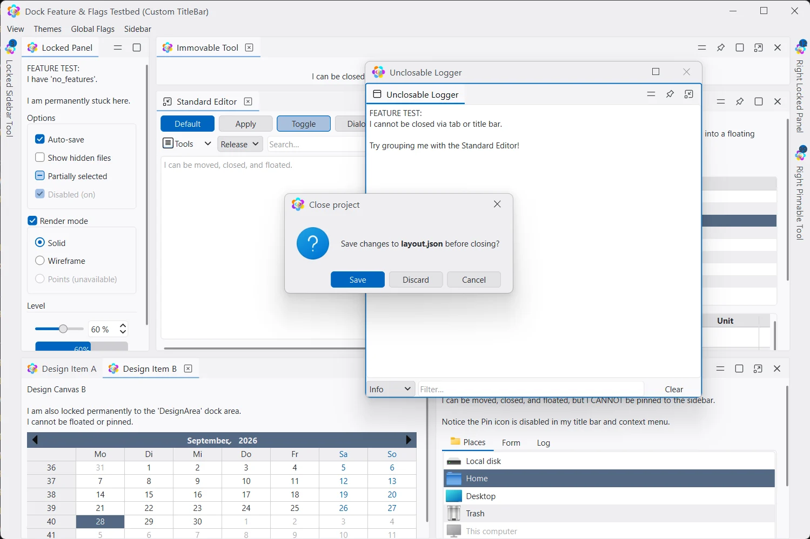
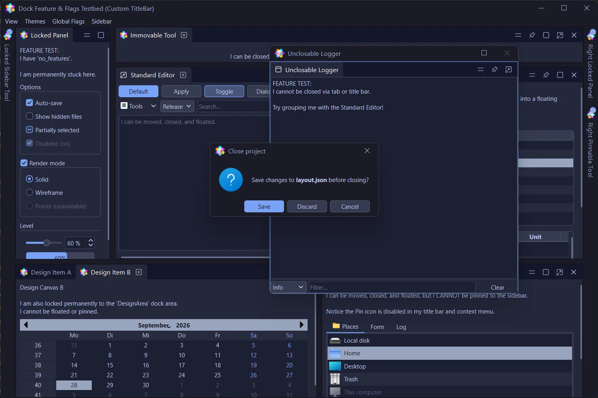

Dock anywhere
Left, right, top, bottom or as a tab. Nested splitters, reorderable tabs, maximize and restore any area.
Lace is an advanced docking system for PySide6. Tabbed dock areas, floating windows, auto-hide sidebars and saved layouts — drawn by a theme engine that makes every panel, menu and dialog of your Qt app match.
$ pip install lace-dock

Features
Built for IDEs, lab software, dashboards and editors — apps where people arrange their own workspace and come back to it every day.
Left, right, top, bottom or as a tab. Nested splitters, reorderable tabs, maximize and restore any area.
Tear any panel out into its own window and drag it back. Native or frameless chrome with snap, shadow and resize borders.
VS Code-style slide-out panels with notification badges. Pin, unpin, and drag panels out of the sidebar again.
37 themes derived in OKLCH, held to WCAG contrast floors, and switched live. Follows the OS light/dark setting if you want it to.
Save the whole workspace to JSON — atomically — and switch between named perspectives like “Coding” or “Review”.
Message boxes, input, colour and file dialogs with your theme's title bar — drop-in for Qt's static helpers.
Drag & drop
Drag a tab or a floating window and Lace overlays a cross over the area under the cursor and the edges of the window, previewing the split before you let go. Per-widget flags decide what can be closed, moved, floated or pinned.

Sidebars
Pin any dock widget to an edge. It folds into a vertical tab — with a badge for unread items — and slides out over the layout on click, keeping or handing back keyboard focus as you configure.

Themes
Docks, tabs, menus, scroll bars, title bars and the full QPalette — Active, Inactive and Disabled — all change together. Here are seventeen of the 37, including the editor classics.

Two seed colours and a chassis make a theme. Surfaces step evenly in OKLCH; text holds its contrast.
python -m lace.theme_kit studio edits a theme live, audits contrast and exports JSON.
Load JSON themes validated by Pydantic, or define a ThemeSpec with your colours and geometry.
New in 0.9
A stock Qt message box breaks the look with a system title bar. lace.dialogs mirrors Qt's static functions — same arguments, same return values — but each dialog carries your theme's title bar. Build your own with FramelessLaceDialog.


Code
Lace's API is plain Python on top of PySide6. Create a manager, add widgets, pick a theme.
import sys
from PySide6.QtWidgets import QApplication, QMainWindow, QTextEdit
from lace import (DockManager, DockWidget, DockWidgetArea, DockWidgetFeature,
LaceStyle, apply_dock_theme)
app = QApplication(sys.argv)
app.setStyle(LaceStyle())
window = QMainWindow()
window.resize(1200, 800)
# The dock manager becomes the window's central widget
dock_manager = DockManager(window)
apply_dock_theme("tokyo_night")
editor = DockWidget("Editor", window)
editor.set_widget(QTextEdit())
editor.set_features(DockWidgetFeature.all_features)
dock_manager.add_dock_widget(DockWidgetArea.center, editor)
window.show()
app.exec()from lace import dialogs
from lace.frameless_dialog import FramelessLaceDialog
# Drop-ins for Qt's static dialogs: same arguments, same results
if dialogs.question(self, "Close", "Discard changes?") == dialogs.StandardButton.Yes:
...
name, ok = dialogs.get_text(self, "Rename", "Name:", text="Layer 3")
color = dialogs.get_color(QColor("red"), self, "Accent")
# Your own dialog, with the theme's title bar
dlg = FramelessLaceDialog(self, buttons="close", resizable=False)
dlg.setWindowTitle("New layer")
dlg.contentLayout().addWidget(my_form)
dlg.exec()# Save and restore the whole workspace
dock_manager.save_layout_to_file("layout.json")
dock_manager.load_layout_from_file("layout.json")
# Named perspectives
dock_manager.add_perspective("Coding")
dock_manager.add_perspective("Review")
dock_manager.open_perspective("Coding")
# Pin a panel to the right sidebar
dock_manager.add_sidebar_widget(DockWidgetArea.right, log_widget)from lace import (ThemeManager, apply_dock_theme, get_dock_style_manager,
load_theme_json, theme_groups)
apply_dock_theme("tokyo_night") # switch live, any time
# Grouped for a menu: Basics, Editor Classics, Neon, Edge Treatments
for group, entries in theme_groups():
for label, key in entries:
...
# Follow the OS light/dark setting
theme_manager = ThemeManager(QApplication.instance())
# Or ship your own, validated by Pydantic
theme = load_theme_json("themes/brand.json")
get_dock_style_manager().apply_theme_dict(theme)Documentation
Copy-paste recipes for every feature.
Module by module: classes, signals and data flow.
Every token, the chassis, and title bars.
Build, audit and export your own themes.
What changed in each release.
lace-dock — install and version history.
Clone the repo and run the demo to try every feature, then drop Lace into your own window.
$ git clone https://github.com/opticsWolf/Lace && cd Lace && pip install -e . && python -m demos.demo_app